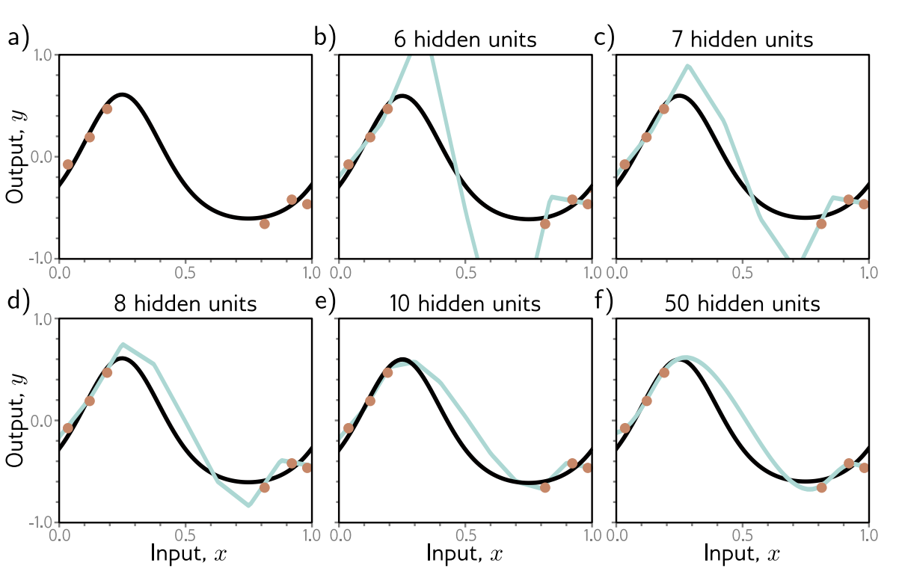
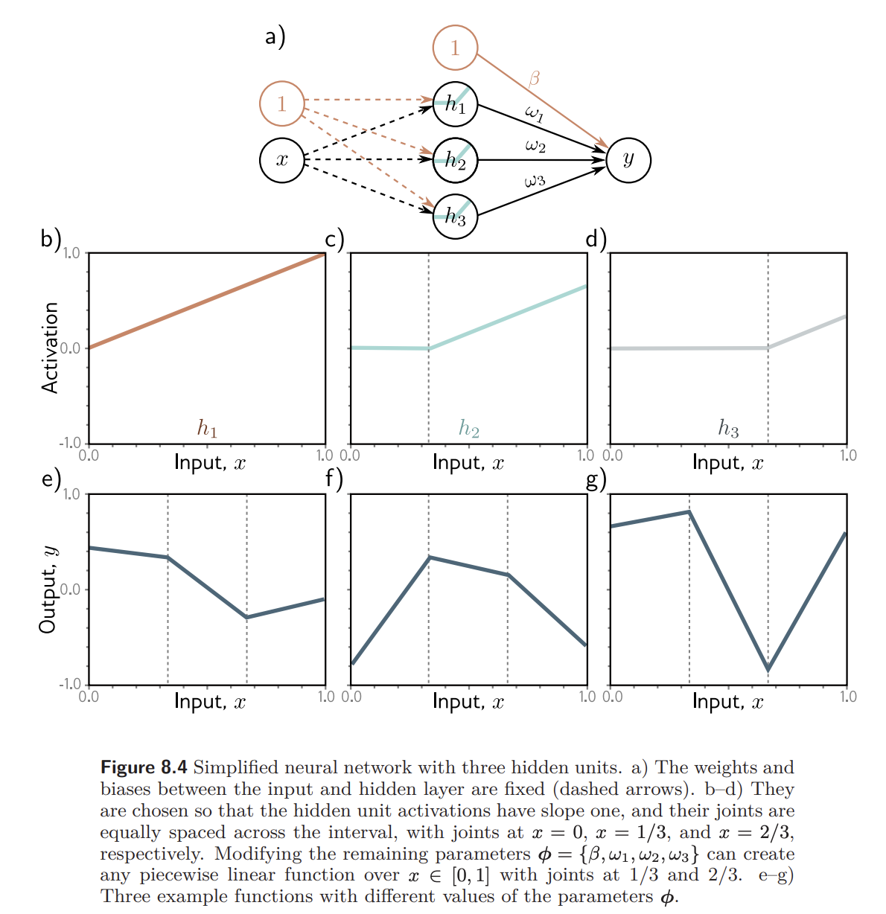

C8.Measuring performance & hyperparameters
发布于 2025年6月2日 | 分类: 深度学习
← 上一篇 C7.Gradients & Initialization 6 / 18 下一篇 → C9.Regularization 1.性能度量基础
将数据分为训练集和测试集, 用来度量泛化误差
2.Error Analysis
2.1.Noise, Bias, Variance
性能度量误差一般有三种错误来源: noice , bias , variance
Noise noise的产生有多种来源: 被错误标记的数据、未被察觉到的变量(approximation in physice). 很少情况下噪音会没有, 比如拟合一个确定的函数.
Bais 模型由于灵活性较差不能拟合的很好, 比如直线拟合曲线
Variance 由于数据不够, 且数据存在noise, 训练出来的函数仍然不是最佳的(? 泛化误差)
注意 这里的误差分析都是性能误差, 而不是训练误差, 即基于测试集上的误差
2.2.Error的数学表达
符号 假设一个 $\mathbb{R}\rightarrow \mathbb{R}$ 的回归问题, 假设数据生成的过程有额外的方差 $\sigma^2$ , 即相同的$x$以一个分布$Pr(y|x)$生成不同的$y$, 则$y$的期望值$\mu[x]$可以写成:
$$\mu[x]=E_y[y[x]]=\int y[x]Pr(y|x)dy$$
则, 固定的noise $\sigma^2 = E_y[(\mu[x]-y[x])^2]$
写出预测函数$f(x, \phi)$与观测值$y[x]$的最小平方误差:
$$\begin{aligned}
L[x] &= (f[x,\boldsymbol \phi]-y[x])^2 \\
&= \left((f[x,\boldsymbol \phi]-\mu[x])+(\mu[x]-y[x]) \right)^2 \\
&= (f[x,\boldsymbol \phi]-\mu[x])^2+2(f[x,\boldsymbol \phi]-\mu[x])(\mu[x]-y[x])+(\mu[x]-y[x])^2 \\
\end{aligned}$$
则期望平方误差为:
$$\begin{aligned}
E_y[L[x]] &= E_y\left[(f[x,\boldsymbol \phi]-\mu[x])^2+2(f[x,\boldsymbol \phi]-\mu[x])(\mu[x]-y[x])+(\mu[x]-y[x])^2 \right] \\
&= (f[x,\boldsymbol \phi]-\mu[x])^2+2(f[x,\boldsymbol \phi]-\mu[x])(\mu[x]-E_y[y[x]])+E_y[(\mu[x]-y[x])^2] \\
&= (f[x,\boldsymbol \phi]-\mu[x])^2+2(f[x,\boldsymbol \phi]-\mu[x]) \cdot 0+E_y[(\mu[x]-y[x])^2] \\
&= (f[x,\phi]-\mu[x])^2+\sigma^2\\
\end{aligned}$$
上述结果的第二项可以就是noise, 而第一项可以继续分解为bias和variance
由于训练的到的参数$\phi$收到训练集$\mathcal{D}$的影响, $f[x, \phi]$应该写成$f[x, \phi[\mathcal D]]$, 即不同的$\mathcal D$可以训练出不同的预测函数$f[x,\phi[\mathcal D]]$, 则预测函数在训练集上的均值$f_\mu[x]$可以写成:
$$f_\mu[x]=E_{\mathcal D}[f[x, \phi[\mathcal D]]]$$
回到期望平凡误差的第一项:
$$\begin{aligned}
&(f[x,\phi[\mathcal D]]-\mu[x])^2\\
&= ((f[x,\phi[\mathcal D]]-f_\mu[x])+(f_\mu[x]-\mu[x]))^2\\
&= (f[x,\phi[\mathcal D]]-f_\mu[x])^2+2(f[x,\phi[\mathcal D]]-f_\mu[x])(f_\mu[x]-\mu[x])+(f_\mu[x]-\mu[x])^2
\end{aligned}$$
再套一个关于数据的期望, 同理立得:
$$E_{\mathcal D}\left[(f[x,\phi[\mathcal D]]-\mu[x])^2 \right]=E_{\mathcal D}[(f[x,\phi[\mathcal D]]-f_\mu[x])^2] + (f_\mu[x]-\mu[x])^2$$
终于得到了, 上述第一项是variance, 第二项是bias
总结如下:
$$E_{\mathcal D}\left[E_y[L[x]] \right]=E_{\mathcal D}[(f[x,\phi[\mathcal D]]-f_\mu[x])^2] + (f_\mu[x]-\mu[x])^2 + \sigma^2$$
上述右边第一项是variance, 第二项是bias, 第三项是noise, 一共套了两个期望hha
Rmk 可见bias是去除了噪音和数据影响后最终的关于模型自身的误差
3.Error降低
noise represent a fundamental limit on expected model performance.
但是variance和bias是可以降低的.
3.1.Reducing variance
Variance可以通过增加训练数据降低:
上图中, 前三行是相同数据量的不同数据训练出了三个预测模型, 最后一行的灰色部分表示的variance, 即模型在不同数据下的不稳定程度, 可见100个样本的模型很稳定
3.2.Reducing bias
增加模型的灵活度即可, 通常通过增加模型的capacity, 比如增加神经网络的隐藏层和隐藏节点数.
更换更加灵活的模型也许也是一种方法
3.3.Bias-variance trade-off
模型灵活度的增加通常会造成variance的增加
上图的右下角variance明显比前两个高.
模型灵活度的增加还可能会造成over fit:
上图的第二行明显在拟合噪音
3.Double descent
double descent(双重下降) 指在某些数据集上, 随着隐藏层数量的增加, 训练集上的误差逐渐减少, 测试集上的误差先减少后增加然后再次减少的现象, 而且第二次误差减少最终可以达到更低的误差.
符号 测试集上误差的下降、上升、再下降分别命名为*under-parameterized regime*、critical regime 、over-parameterized regime
上图是对三个数据集在不同model capacity的条件下进行训练的结果, MNIST-1D在不引入noise的情况下没有出现double decent, 其他均出现了double decent.
训练参数的数量更是在后期达到了几乎和训练数据一样的规模. (某种over over fit)
Explanation?? 数据量太少、灵活度大的情况下, 由于未知的原因, 得到了一个泛化能力很强的模型
输入数据的维度有40, 是一个很大的空间, 如果每个维度只能取离散的10个值的话, 一共有$10^{40}$这么多种可能???.而上述数据集均只有$10^5$左右的数据, 数据的密度会像下图一样[未写完]...

也许是因为模型平滑地拟合了数据间巨大的间隙, 导致了测试集上误差的降低.
但是为什么会平滑的拟合呢, 而不是像过拟合那样讨厌的拟合噪音.
4.超参数的选择
上几节对于error的分析正是基于训练结果的, 所以超参数的选择实际上就是选择合适的参数降低上述三个error.
Fact1(没有解析解) In the modern regime, there is no way to tell how much capacity should be added before the test error stops improving.
Fact2(穷举法不可行) The hyperparameter space is generally smaller than the parameter space but still too large to try every combination exhaustively.
Fact3(无法和训练参数一起梯度下降) Unfortunately, many hyperparameters are discrete (e.g., the number of hidden layers), and others may be conditional on one another (e.g., we only need to specify the number of hidden units in the tenth hidden layer if there are ten or more layers). $\color{red} ERROR$conditional是什么意思???
Conclusion Hyperparameter optimization algorithms intelligently sample the space of hyperparameters, contingent on previous results.当然, 使用验证集进行评估.
§Problems
Problem8.3
Given a training dataset consisting of $I$ input/output pairs $\{x_i, y_i\}$, show how the parameters $\{β, ω_1, ω_2, ω_3\}$ for the model in figure 8.4a using the least squares loss function can be found in closed form.

Solution 可以直接写出$y$的表达式:
$$y=\beta+\omega_1h_1+\omega_2h_2+\omega_3h_3\\
h_1=\left\{ \begin{aligned} 0,x<0\\x,x\ge0 \end{aligned} \right.
,h_2=\left\{ \begin{aligned} 0,x<1/3\\x,x\ge 1/3 \end{aligned} \right.
,h_3=\left\{ \begin{aligned} 0,x<2/3\\x,x\ge 2/3 \end{aligned} \right.$$
则, 对于$I$个数据, 损失函数如下:
$$L(\boldsymbol \phi)=\sum_{i=1}^I (\beta+\omega_1h_1(x_i)+\omega_2h_2(x_i)+\omega_3h_3(x_i) - y_i)^2$$
通过求导寻找最小值解, 将训练集划分为四个部分:$D=\{D_1,D_2,D_3,D_4 \}$, s.t.$x_i$的值分别位于$(-\infin,0),(0,1/3),(1/3,2/3),(2/3,+\infin)$
$$\frac{\part L}{\part \beta} = 2\sum_{i=1}^I(\beta+\omega_1h_1(x_i)+\omega_2h_2(x_i)+\omega_3h_3(x_i) - y_i)=2\sum_{D}(y(x_i)-y_i) =0 \\
\frac{\part L}{\part \omega_1} = 2\sum_{i=1}^I(\beta+\omega_1h_1(x_i)+\omega_2h_2(x_i)+\omega_3h_3(x_i) - y_i)h_1(x_i)=2\sum_{D-D_1}(y(x_i)-y_i)x_i=0\\
\frac{\part L}{\part \omega_2} = 2\sum_{i=1}^I(\beta+\omega_1h_1(x_i)+\omega_2h_2(x_i)+\omega_3h_3(x_i) - y_i)h_2(x_i)=2\sum_{D-\{D_1,D_2\}}(y(x_i)-y_i)x_i=0\\
\frac{\part L}{\part \omega_3} = 2\sum_{i=1}^I(\beta+\omega_1h_1(x_i)+\omega_2h_2(x_i)+\omega_3h_3(x_i) - y_i)h_3(x_i)=2\sum_{D_4}(y(x_i)-y_i)x_i=0\\$$
上述式子得到的$y(x_i)$仅仅为了符号的简洁性, 进一步代入留到最后.
由后3式可得:
$$\sum_{D_2}(y(x_i)-y_i)x_i=\sum_{D_3}(y(x_i)-y_i)x_i=\sum_{D_4}(y(x_i)-y_i)x_i=0$$
其中:
$$\begin{aligned}
\sum_{D_2}(y(x_i)-y_i)x_i&=\sum_{D_2}(\beta x_i+\omega_1h_1(x_i)x_i+\omega_2h_2(x_i)x_i+\omega_3h_3(x_i)x_i)\\
&= \beta\sum_{D_2}x_i+\omega_1\sum_{D_2}h_1(x_i)x_i+\omega_2\sum_{D_2}h_2(x_i)x_i+\omega_3\sum_{D_2}h_3(x_i)x_i=0
\end{aligned}$$
1式可化简为:
$$\sum_Dy(x_i)=\sum_{D}y_i\\
\Rightarrow I\beta+\omega_1\sum_Dh_1(x_i)+\omega_2\sum_Dh_2(x_i)+\omega_3\sum_Dh_3(x_i)=\sum_D y_i\\$$
联立得:
$$\begin{bmatrix}
I & \sum_Dh_1(x_i) & \sum_Dh_2(x_i) & \sum_Dh_3(x_i)\\
\sum_{D_2}x_i & \sum_{D_2}h_1(x_i)x_i & \sum_{D_2}h_2(x_i)x_i & \sum_{D_2}h_3(x_i)x_i\\
\sum_{D_3}x_i & \sum_{D_3}h_1(x_i)x_i & \sum_{D_3}h_2(x_i)x_i & \sum_{D_3}h_3(x_i)x_i\\
\sum_{D_4}x_i & \sum_{D_4}h_1(x_i)x_i & \sum_{D_4}h_2(x_i)x_i & \sum_{D_4}h_3(x_i)x_i\\
\end{bmatrix}
\begin{bmatrix}
\beta\\
\omega_1\\
\omega_2\\
\omega_3\\
\end{bmatrix}
=
\begin{bmatrix}
\sum_Dy_i\\
0\\
0\\
0\\
\end{bmatrix}$$
代入各个区间的$h_i(x)$, 得:
$$\begin{bmatrix}
I & \sum_{D_2+D_3+D_4}x_i & \sum_{D_3+D_4}x_i & \sum_{D_4}x_i\\
\sum_{D_2}x_i & \sum_{D_2}x_i^2 & 0 & 0\\
\sum_{D_3}x_i & \sum_{D_3}x_i^2 & \sum_{D_3}x_i^2 & 0\\
\sum_{D_4}x_i & \sum_{D_4}x_i^2 & \sum_{D_4}x_i^2 & \sum_{D_4}x_i^2\\
\end{bmatrix}
\begin{bmatrix}
\beta\\
\omega_1\\
\omega_2\\
\omega_3\\
\end{bmatrix}
=
\begin{bmatrix}
\sum_Dy_i\\
0\\
0\\
0\\
\end{bmatrix}$$
如何解呢.
$\color{red}{\bold {Answer}}$ 不需要算解析解哈, 只需要给出loss function的表达式就行了, 虽然你也没算出解析解()
← 上一篇 C7.Gradients & Initialization 6 / 18 下一篇 → C9.Regularization ← 返回技术分享